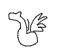
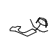
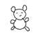
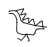
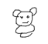
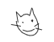

Generator
I skal nu prøve rollen som Generator, hvor I skal blive gode til at generere tegninger.
I skal tegne et gæt, sende det afsted til Diskriminatoren, og vil så få en sandsynlighed tilbage:
- Sandsynlighed 1: I har tegnet noget, der ligner de træningsbilleder, som diskriminatoren er trænet på.
- Sandsynlighed 0: I har tegnet noget, der slet ikke ligner de træningsbilleder, som diskriminatoren er trænet på.
Jeres opgave er at bliver gode generatorere, der inden tiden er gået, kan tegne tegninger som diskriminatoren
tror kommer fra træningsbillederne. Hvis I tre gange for Diskriminatoren til at tro at jeres tegninger er fra
træningsbillederne, stopper tiden.
Hint til overordnet kategori: Dyr



Generator
(Tegn her)
¨
Hint: Den lever i og omkring havet
Hint: Den har kløer
Træningsbilleder

Forsøg:
Sandsynlighed:
N/A
Vurdering:
N/A